The Research Teams
Meet the Teams
9 teams across 5 countries conducting original research.
🌎 Global STEM Ambassador Program
► About this program
YSA’s advanced research and leadership track. A year-long commitment where student teams conduct original field research, produce formal presentations, and represent their communities at international events. 10 teams across North Carolina, Moldova, and Yemen.
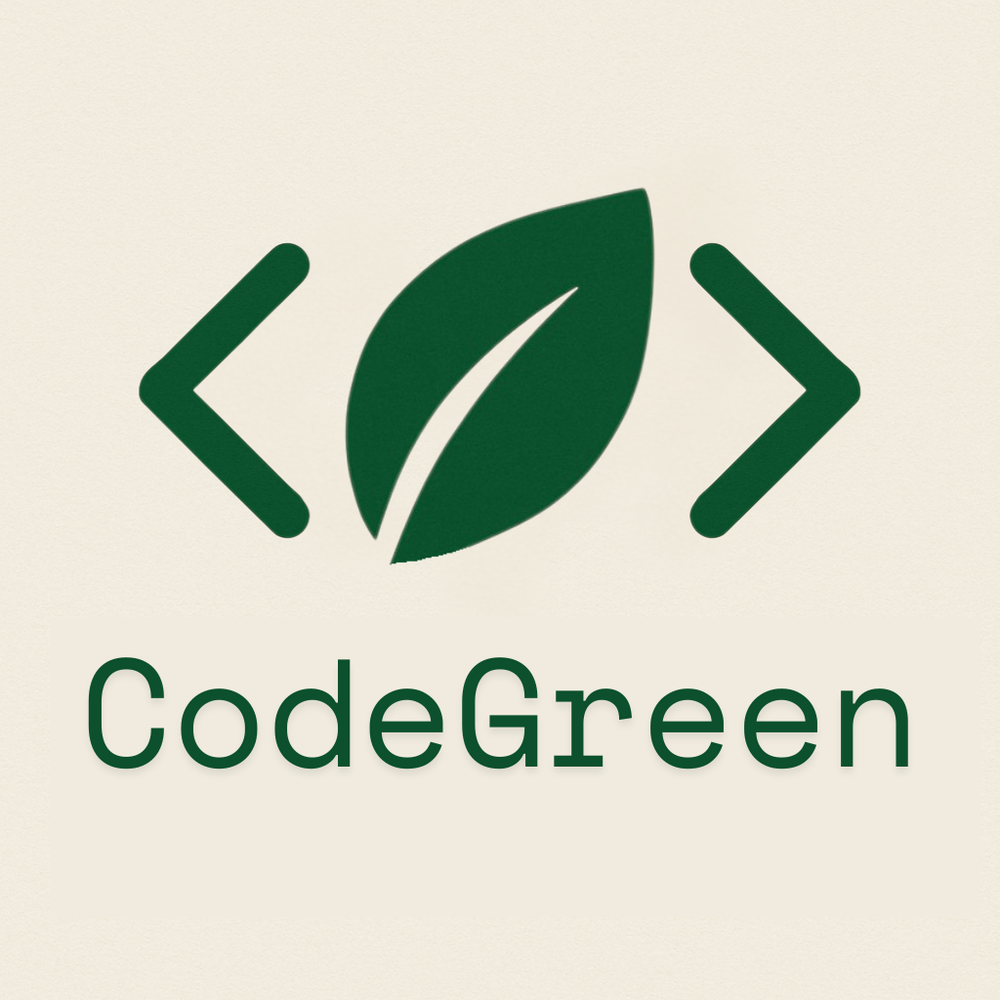
Code Green
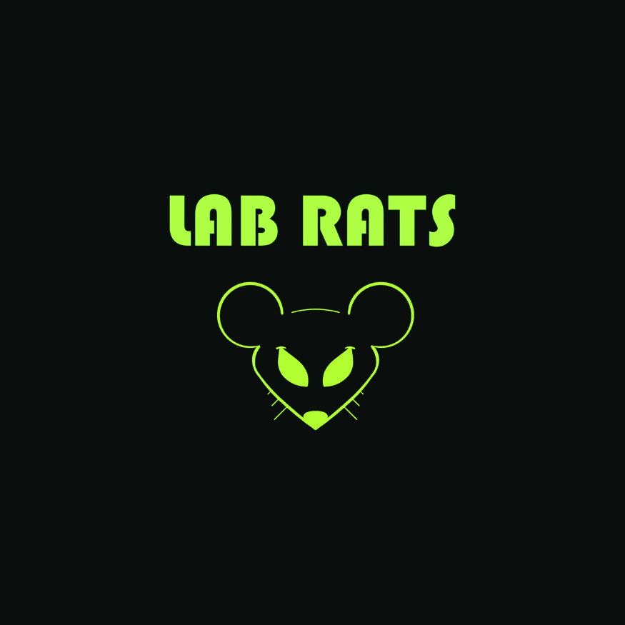
Lab Rats
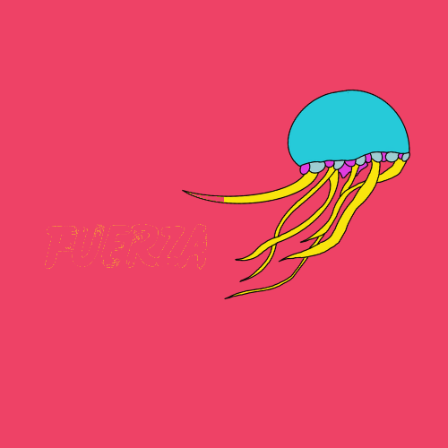
Forța
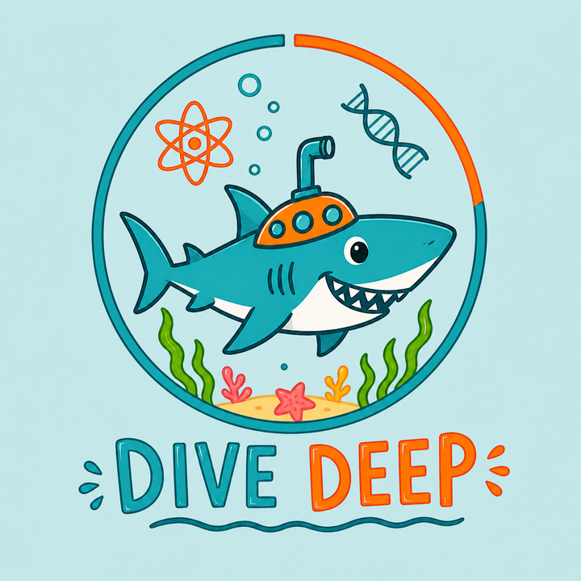
Dive Deep
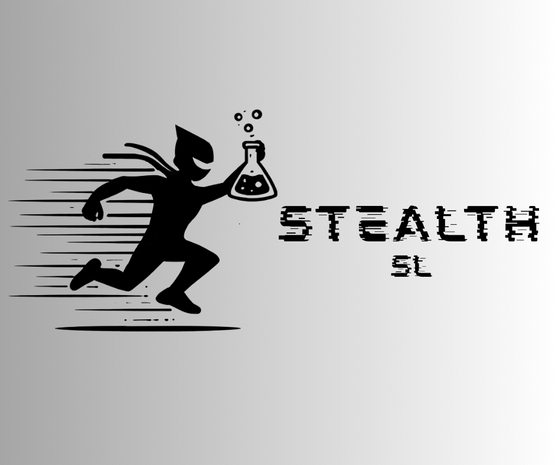
Stealth
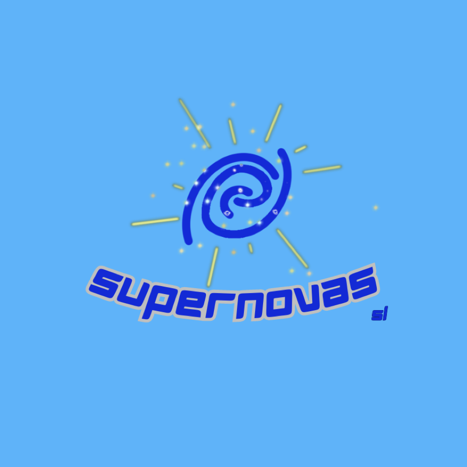
Supernovas
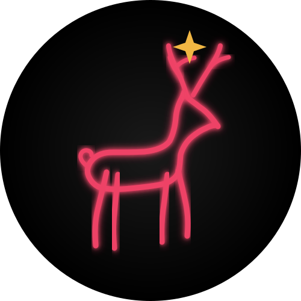
Codrii Minds
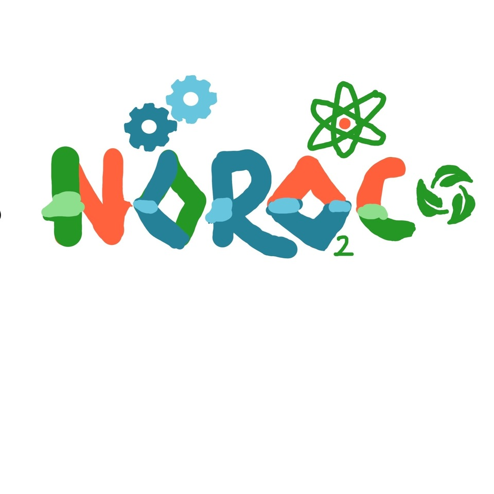
Noroc
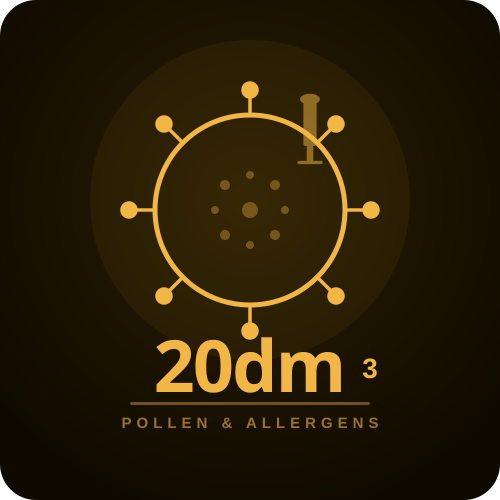
20dm³
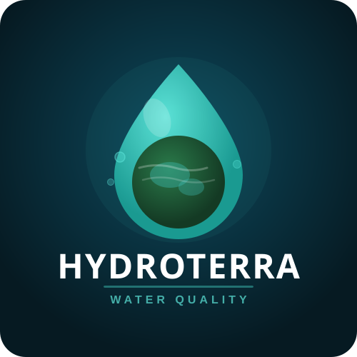
HydroTerra
🔬 STEM Explorer Program
► About this program
STEM Explorers is the entry-level program for students starting their science journey. After a year, Explorers can apply to graduate into the Global STEM Ambassador Program.
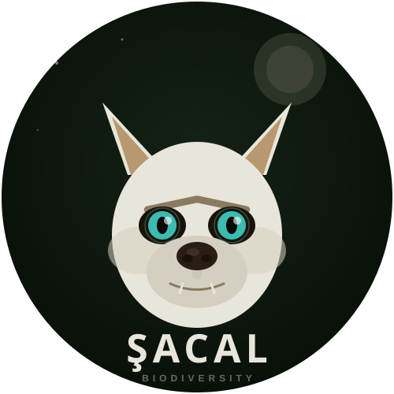
Şacal

Capybara

Ice Bee
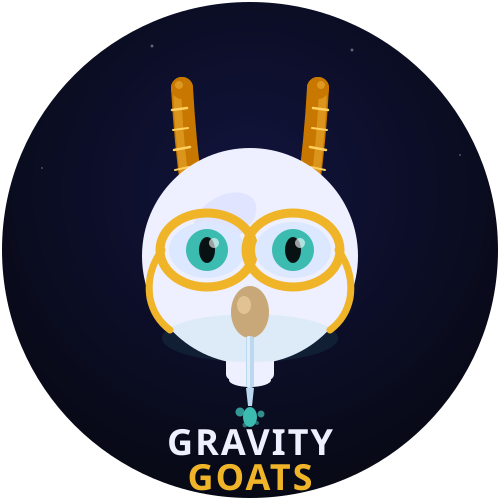
Gravity Goats